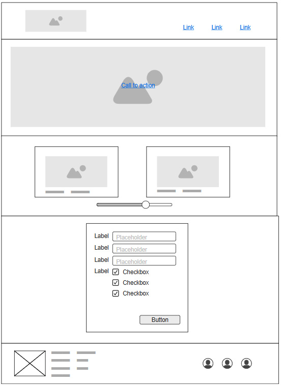
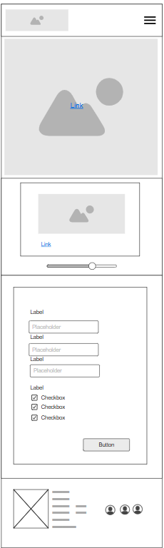

Site Name
Nany's Wellness
This name represents a personal wellness hub created to share practices that support balance and well-being through breathing, mindfulness, and movement. “Nany” is my nickname, which gives the site a friendly and authentic tone. The name also aligns with my existing Instagram presence, @nanys.wellness.
Optional domain: nanyswellness.com
Site Purpose
The purpose of Nany's Wellness is to provide accessible information and guidance on healthy habits that connect body and mind. The website will focus primarily on breathing techniques such as the Wim Hof and 6-2-4 methods, featuring step-by-step instructions, interactive examples, and a personal wellness tracker. The site aims to motivate visitors to incorporate mindfulness and intentional breathing into their daily routines.
Scenarios
- “What are the benefits of practicing the Wim Hof or 6-2-4 breathing methods?”
- “How can I track my daily breathing or mindfulness progress?”
Color Scheme
- Primary Color: #ffc2da: Used for accents, buttons, and navigation hover effects to convey calm and balance.
- Secondary Color: #e0e5da: Used for background areas to maintain a light, peaceful atmosphere.
- Accent Color: #a17081: Used for headings and key highlights to provide contrast and depth.
- Text Color: #524A3A: Used for main body text for high readability.
Typography
- Headings: "Cormorant Garamond" a serif font chosen for elegance and calm emphasis.
- Body Text: "Funnel Sans" a clean, modern sans-serif font for readability and simplicity.
Wireframe
-
Large view:
 -
Small view:
